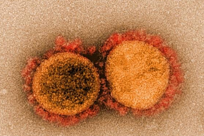

Раскрыта опасность бразильского штамма коронавируса
Международная группа ученых подтвердила, что новый бразильский штамм коронавируса SARS-CoV-2 в два раза более заразен, чем другие формы патогена, что делает его более опасным для уже переболевших людей.Свои выводы исследователи опубликовали в журнале Science.
В конце 2020 года в бразильском городе Манаус наблюдался новый рост заболеваемости COVID-19, несмотря на высокий уровень инфицирования до этого.Секвенирование генома 184 образцов вирусов, отобранных в период с ноября 2020 года по январь 2021 года, раскрыло, что в Манаусе начал распространяться новый вариант — P.1, характеризующийся 17 аминокислотными заменами, три из которых затронули шиповый белок.Эти мутации — K417T, E484K и N501Y — потенциально способно укрепить связывание вирусного белка с рецептором ACE2 на поверхности человеческих клеток, помогая вирусу проникнуть внутрь.
Анализ молекулярных часов, который основан на гипотезе, что мутации возникают в среднем с постоянной скоростью, показал, что новый штамм появился примерно в середине ноября 2020 года, и ему предшествовал период более быстрой молекулярной эволюции.По оценкам ученых, заразность P.1 увеличена в 1,7-2,4 раза, а защита против него у переболевших людей снижена на 21-46 процентов по сравнению с защитой от других штаммов.Предварительные данные указывают на увеличение смертности в 1,2-1,9 раза, но пока неясно, вызвано ли это изменениями в вирусе или возросшей нагрузкой на систему здравоохранения в городе.
В настоящий момент линия P.1 быстро распространяется по Бразилии, и она обнаружена более чем в 36 странах.По словам ученых, ситуация требует срочных исследований для оценки сопротивляемости нового штамма существующим вакцинам.
Posted On: 2021-04-19T16:55:00
Posted By: Леонид Немов

Content Date: 2021-04-19
Download Date: 2021-09-16
Document ID: L0C04GA0B